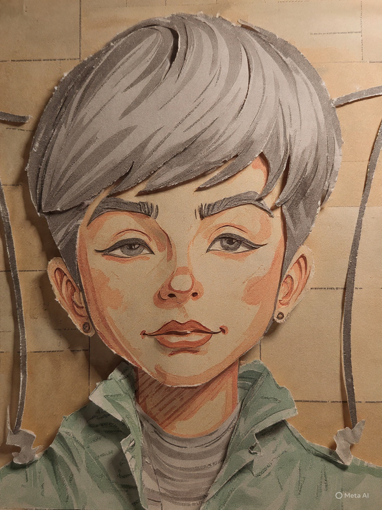

a BS IT student at the Pamantasan ng Lungsod ng Muntinlupa. I have been diagnosed with mild Austism Spectrum Disorder, and I am working hard to study and graduate with a degree in BS Information Technology. I enjoy helping my mom with the cooking, and I often assist her whenever she prepares our meals. I have also developed a passion for digital drawing; it helps me relax whenever I feel stressed. During my free time or when I want to unwind, I listen to my favorite music. Sometimes, after finishin my studies and completing the tasks assigned by my professors, I enjoy watching Japanese anime and looking at my favorite action figures.
Simple ingredients, big flavors, and a lot of love in every dish.
Find me on Instagram, TikTok, and Pinterest for daily recipe inspiration!